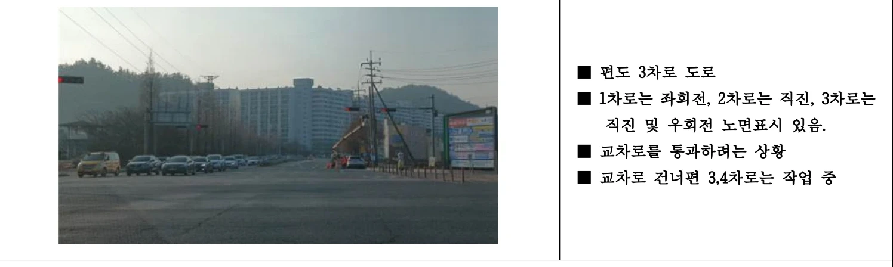

683. Hai cách lưu thông nào là không đúng trong tình huống sau?

- ①Ở làn đường số 1, có thể rẽ phải khi đèn xanh.
- ②Ở làn đường số 1, có thể rẽ trái khi đèn mũi tên rẽ trái bật sáng.
- ③Ở làn đường số 2, có thể đi thẳng khi đèn xanh.
- ④Ở làn đường số 3, có thể rẽ phải sau khi tạm dừng ngay trước vạch dừng khi đèn đỏ.
- ⑤Ở làn đường số 3, đi thẳng khi đèn xanh và tạm dừng ở khu vực an toàn nằm trong đường giao nhau.
Xem đáp án
Đáp án
① Ở làn đường số 1, có thể rẽ phải khi đèn xanh.
⑤ Ở làn đường số 3, đi thẳng khi đèn xanh và tạm dừng ở khu vực an toàn nằm trong đường giao nhau.
Căn cứ
Khi người điều khiển tất cả các phương tiện muốn rẽ phải tại ngã tư thì trước tiên phải rẽ phải đồng thời lái xe chậm dọc theo mép đường bên phải (Luật Giao thông đường bộ, Điều 25, Khoản 1). Nếu bạn đang lái xe ở làn số 3 và phía trước có công trường xây dựng ở làn số 3 và 4, bạn nên giảm tốc độ, bật đèn xi nhan và đổi tuyến đường trước sang làn hai. Tất cả các phương tiện không được đi vào những nơi bị cấm vào, chẳng hạn như khu vực an toàn.
Phần căn cứ là bản dịch máy để tham khảo.